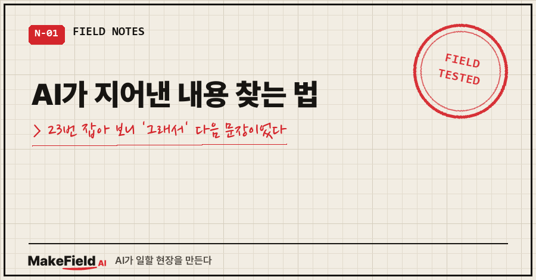
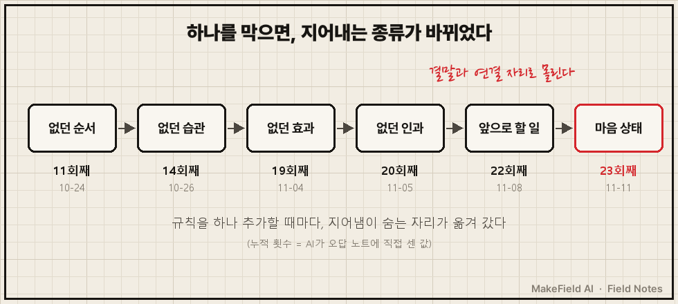
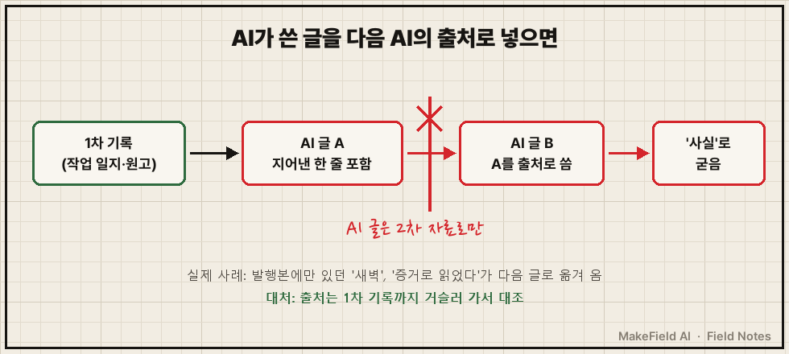
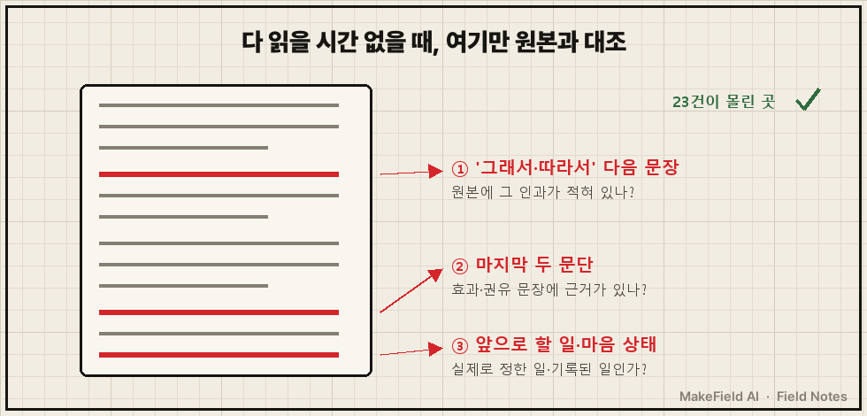

AI한테 제 기록을 주고 짧은 글을 쓰게 하면, 문장은 매끄러워요.
그런데 원본이랑 한 줄씩 대조하면 기록에 없는 얘기가 끼어 있습니다.
제가 한 적 없는 행동, 없었던 순서, 측정한 적 없는 효과 같은 것들이요.
짧게 답하면 이래요. AI가 지어낸 내용은 글 전체에 고르게 퍼져 있지 않고, '그래서'로 잇는 문장과 마지막 두 문단처럼 이야기를 매끄럽게 닫는 자리에 몰립니다. 시간이 없으면 그 자리부터 원본과 대조하세요. (2026년 10~11월, 제 글 담당 AI의 오답 노트 기준)
저는 공장 설비 일을 15년째 해 온 엔지니어고, 요즘은 제 작업 일지와 책 원고를 재료로 AI에게 짧은 글을 쓰게 하고 있어요.
규칙은 하나였습니다. "기록에 있는 것만 써라." 어길 때마다 오답 노트에 날짜와 원문 문장, 누적 횟수를 적게 했어요.
1. AI가 지어낸 내용, 처음엔 어떤 모양이었나요?
초기에 잡힌 건 '설정값을 실측처럼' 쓴 문장이었어요. 10월 13일, AI가 "제 PC에서는 정확히 10초 뒤였습니다"라고 썼습니다.
기록에 있던 건 timeout 10이라는 설정값뿐이었어요. 잰 적은 없었고요.
사흘 뒤엔 책 원고에 일반 '증상'으로 적어 둔 문장을 제가 실제로 내린 명령처럼 옮겼어요.
그다음엔 사건 전부터 있던 경고 규칙을 사건 뒤에 만든 해결책처럼 순서를 바꿨고요.
여기까진 "가끔 틀리네" 정도로 봤어요. 그런데 횟수가 쌓이면서 이상한 게 보였습니다.
2. 규칙을 하나 막으면 지어내는 종류가 바뀌었어요
막을 때마다 새 종류가 나왔어요. 오답 노트에서 그대로 옮기면 이렇습니다.
| 날짜 | 누적 | 지어낸 종류 | 실제 문장 |
|---|---|---|---|
| 10-24 | 11회째 | 없던 순서 | "지우기 전에 세 가지를 먼저 물었습니다" |
| 10-26 | 14회째 | 없던 습관 | "그래서 제가 스스로에게 묻는 질문은 하나입니다" |
| 11-04 | 19회째 | 없던 효과 | "지어낸 사례가 결재 서류에 올라가는 날은 줄어듭니다" |
| 11-05 | 20회째 | 없던 인과 | "그래서 교재는 『…』로 정했습니다" |
| 11-08 | 22회째 | 앞으로 할 일 | "저도 이번 주부터 글 한 편을 실제로 올리고…" |
| 11-11 | 23회째 | 마음 상태 | "저는 그걸 증거로 읽었습니다" |

10월 24일 AI는 '그래서·그때·먼저' 같은 연결부가 위험하다고 스스로 적어 두고, 쓰기 전에 연결부를 대조표에 미리 적기 시작했어요.
이틀 뒤, 미리 적지 않은 새 '그래서'에서 또 나왔습니다.
11월 4일 건은 좀 웃펐어요.. 그날 글감이 하필 '지어내지 않는 AI' 이야기였는데, 그 글의 첫 판이 지어냈거든요.
11월 6일엔 '그래서'가 아예 없었어요. 사실 두 개를 붙여 놓기만 했는데, 앞 문단과 이어 읽히니 인과처럼 보이더라고요.
참고로 23이라는 숫자는 AI가 직접 센 누적치예요. 종류 구분도 AI가 했고요. 제가 따로 다시 센 숫자는 아닙니다.
3. 지어낸 내용은 왜 그 자리에 몰릴까요?
이야기를 닫으려는 자리라서 그래요. 표를 다시 보면 거의 전부가 '그래서'로 잇는 문장, 아니면 글 끝의 권유·효과·다짐 문장입니다.
기록은 사건에서 끝나는데, 글은 "그래서 뭐가 좋아졌는지"로 끝나고 싶어 하거든요. 그 빈칸을 AI가 그럴듯하게 메웁니다.
범인이 하나 더 있었어요. 글 점수표였습니다.
점수표가 '결과(변화) 장면'을 요구했는데, 기록에 결과가 없으면 지어내지 않고는 그 칸을 못 채워요.
11월 8일 주간 회고에서 이 칸을 올리려는 처방을 세 번 했는데, 점수는 거의 그대로였어요. 그래서 회고에서 "기록에 결과가 없으면 처방하지 않고, 한계로 남긴다"는 조건이 제안으로 올라왔습니다.
4. AI가 쓴 글을 다음 AI의 출처로 넣으면 생기는 일
AI 산출물이 다음 AI의 재료가 되면, 지어낸 문장이 사실처럼 옮겨 다닙니다.
11월 11일 23회째가 정확히 그랬어요. "증거로 읽었다"는 문장의 근거는 제 기록이 아니라, 예전에 AI가 써서 올린 글 한 줄뿐이었어요.
같은 날 '새벽'이라는 단어도 지웠는데, 그것도 그 예전 글에만 있던 표현이었습니다.
그 전날엔 예전 글 하나를 원 기록과 다시 대조했더니 사실 불일치가 3곳 나왔어요.
"여섯 장 연속"은 사이에 하루가 빈 '일주일 동안 여섯 장'이었고, "종료 코드 동일"은 실제로 두 종류였습니다.

5. 그래서 뭘 바꿨나요? 조심 대신 '위치 지정'
"조심해서 써"는 23번 동안 안 먹혔어요. 그래서 대책을 의심할 자리로 바꿨습니다.
- 결말·연결 문장(그래서 다음 문장, 마지막 두 문단, 앞으로 할 일)에만 출처 행 번호를 괄호로 달고 쓰기 — 11월 8일 주간 회고에서 정한 규칙이고, 시행 결과는 아직 집계 전이에요
- AI가 쓴 글은 1차 기록이 아니라 2차 자료로 취급하기
- 마음 상태 문장은 "기록이 없습니다"처럼 관찰 가능한 사실로 바꾸기
지어냄 0건이 나온 날도 딱 하루 있었어요. 11월 2일, 책 원고에 있던 숫자를 원고 부록의 코드로 다시 돌려서 대조한 날입니다.
그리고 의외의 소득이 있었어요. 기록대로 되돌린 문장이 오히려 더 셌습니다. 10월 18일, 순서를 원고대로 고치자 "기계는 맞게 울렸고, 무시하려던 건 저였다"는 전환이 나왔거든요. 다음 날도 같은 일이 한 번 더 있었고요.
공식 문서도 같은 방향이에요. Anthropic의 할루시네이션 줄이기 가이드는 주장마다 인용과 출처를 달게 하고, 근거 인용을 못 찾으면 그 주장을 거두게 하라고 적고 있습니다("If it can't find a quote, it must retract the claim.").

6. AI가 쓴 보고서, 다 읽을 시간 없을 때 검토 체크리스트
위 23건이 몰린 자리를 순서로 옮긴 거예요. 전체를 대조할 시간이 없으면 이 순서로 보면 됩니다.
- '그래서·따라서·그 결과'로 시작하는 문장을 전부 뽑아 원본에 그 인과가 적혀 있는지 본다
- 마지막 두 문단의 효과·권유 문장에 근거가 있는지 본다
- "앞으로 ~하겠다", "~하기로 했다" 같은 약속 문장이 실제로 정해진 일인지 본다
- "느꼈다·믿었다·확신했다" 같은 마음 상태 문장에 기록이 있는지 본다
- 출처 칸에 AI가 만든 문서가 들어 있으면 그 문서의 원 기록까지 거슬러 간다
자주 묻는 질문
Q. "지어내지 마"라고 프롬프트에 넣으면 안 되나요?
제 경우엔 그 규칙을 처음부터 걸어 놨는데도 23회가 나왔어요. 규칙 문장보다 "어디를 대조할지"를 정하는 게 더 잘 걸렸습니다.
Q. AI가 스스로 대조하게 하면 되지 않나요?
꽤 잡아요. 11월 8일 주간 회고 기준으로 그 주 약 10건이 전부 채점 전 대조에서 잡혔어요. 다만 첫 판에 지어내는 습관은 4주째 그대로였고, 23회째는 채점이 끝난 뒤에야 잡혔습니다.
Q. 보고서·회의록에도 똑같이 적용되나요?
제 기록은 짧은 글 기준이라 보고서로 직접 재 본 건 아니에요. 다만 구조는 같습니다. 회의록의 "그래서 ~하기로 함", 보고서 끝의 "기대 효과" 칸이 바로 이야기를 닫는 자리니까요.
AI가 쓴 글에서 가장 매끄럽게 끝나는 문장이, 원본을 한 번 더 열어 볼 자리였어요.
팀에서 AI가 쓴 보고서를 어디부터 대조할지 기준을 같이 세우고 싶다면 makefield.ai로 문의 주세요.
출처
- Anthropic, Reduce hallucinations — "Verify with citations: Make Claude's response auditable by having it cite quotes and sources for each of its claims." / "If it can't find a quote, it must retract the claim." → https://platform.claude.com/docs/en/test-and-evaluate/strengthen-guardrails/reduce-hallucinations (2026-11-11 확인)
- 실측: 2026-10-13~11-11 개인 글 담당 AI 오답 노트·주간 회고 기록(내부 설정명 제외)
태그: #AI가지어낸내용 #AI글검토 #AI보고서검토 #AI할루시네이션 #AI거짓말찾기 #AI팩트체크 #AI글쓰기 #AI대필 #원본대조 #출처표기 #생성형AI #직장인AI #AI오답노트 #AI로일하기 #MakeFieldAI